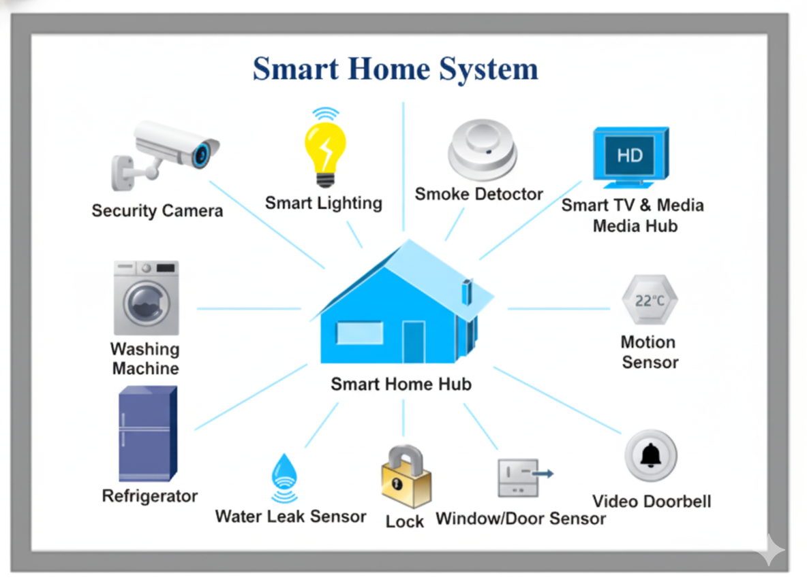

Demostraciones

Arquitectura doméstica IoT: del sensor al usuario
Este diagrama ilustra el flujo completo en un sistema IoT doméstico: múltiples sensores recopilan datos, un hub o microcontrolador los agrupa, los envía a la nube para procesamiento, y el usuario final accede vía móvil o web para tomar decisiones o automatizar tareas.
Qué aprenderá el usuario:
- Cómo se integran sensores y actuadores en una red IoT
- Cómo se realiza la transmisión de datos hacia la nube.
- Cómo el usuario final accede al sistema y lo controla.
“Observa esta arquitectura y luego explora el ejemplo práctico donde medimos temperatura/humedad y activamos un ventilador automáticamente.”